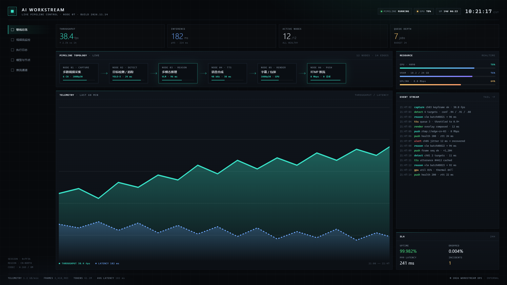
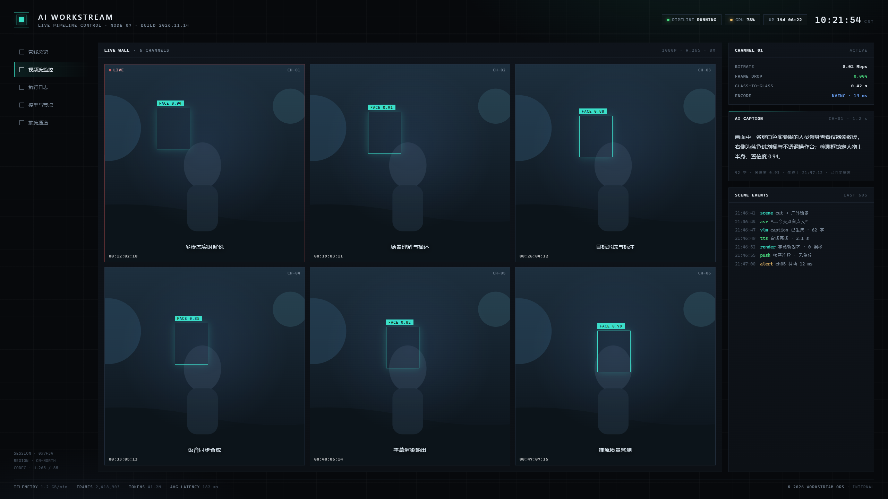
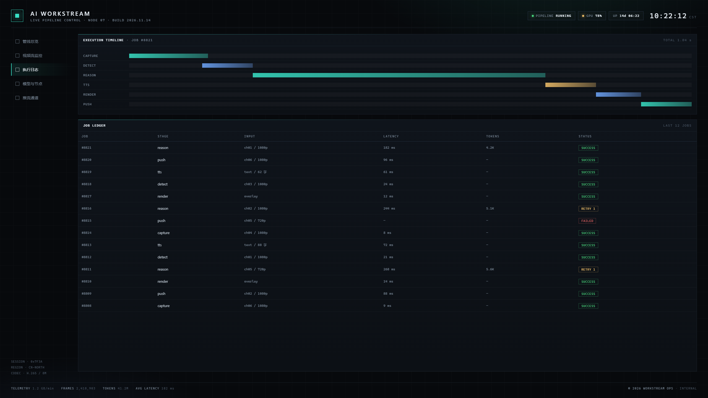

实时管线监控界面 · 2560 × 1440 · 点图看原图



打开完整说明页 → · 可交互版本 →
这里放的是最近几轮设计语言实验：先把一种平面风格拆成规则，再用单文件 HTML 跑一遍动效节奏。 每页都是独立 HTML，无构建、无外部依赖（字体走系统回退）。
github.com/zhumadian634-lab/aesthetic-experiments 每页都是独立单文件，可直接另存或分享；这里是公开副本。